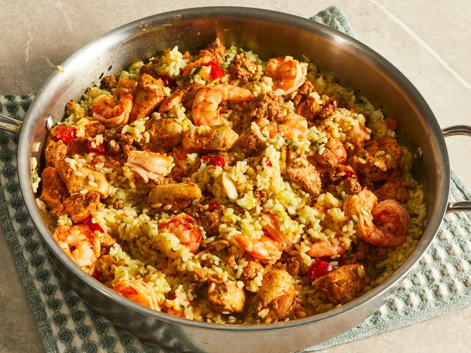

Paella

Description
Paella is a classic Spanish dish featuring saffron rice with chorizo,
chicken, and seafood. This easy recipe marinades the chicken in paprika
and oregano for added flavor and adds the shrimp at the last minute for
fantastic results. Serve this delicious paella in the center of your table
so everyone can dig in.
Ingredients
- Chicken
- Chorizo
- Shrimp
- Rice
- Vegetables
- Chicken Stock
- Spices
Steps
-
Mix olive oil, paprika, oregano, salt, and pepper for marinade in a
glass bowl.
-
Begin paella: Add chicken and stir to coat. Cover and refrigerate until
needed.
-
Heat 2 tablespoons olive oil in a large skillet or paella pan over
medium heat. Stir in garlic and pepper flakes, then stir in rice. Cook
and stir until rice is coated with oil, about 3 minutes.
-
Add saffron threads, bay leaf, parsley, chicken stock, and lemon zest.
Stir until well combined and bring to a boil. Reduce heat to medium-low,
cover, and simmer for 20 minutes.
-
While the rice is cooking, heat olive oil in a separate skillet over
medium heat. Stir in marinated chicken and cook for 3 minutes. Add onion
and cook until translucent, about 5 minutes.
-
Add bell pepper and sausage; cook and stir, breaking sausage up with a
spatula, for 5 minutes. Add shrimp; cook and stir until shrimp are
bright pink on the outside and the meat is opaque, about 2 minutes.
-
Spread rice mixture onto a serving tray. Top with meat and seafood
mixture.